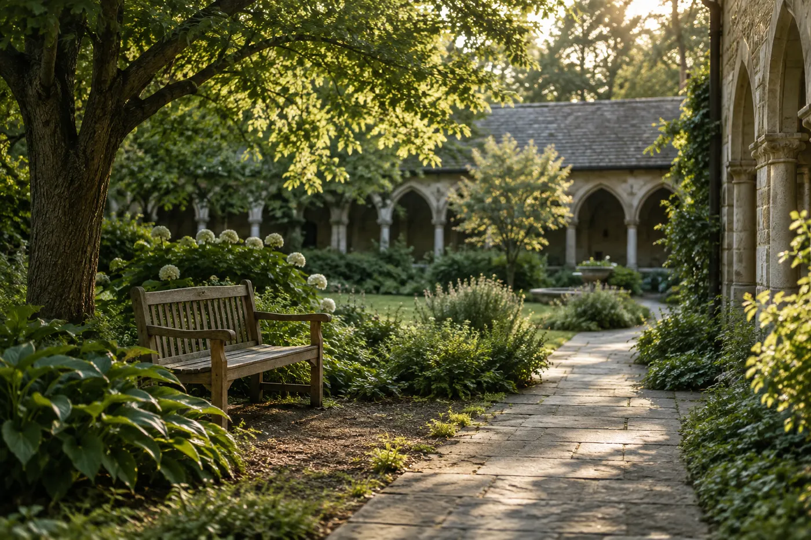

A Catholic retreat series
A little space to be still.
Step away from the everyday and make room for prayer, reflection, and renewal. Explore upcoming retreat opportunities as details become available.

Step away from the everyday and make room for prayer, reflection, and renewal. Explore upcoming retreat opportunities as details become available.
